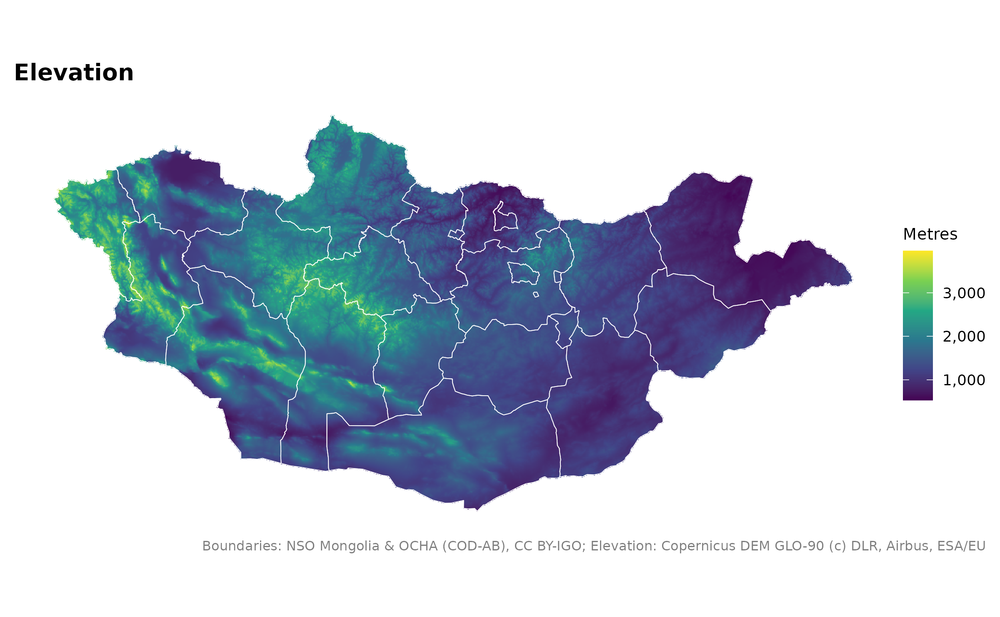
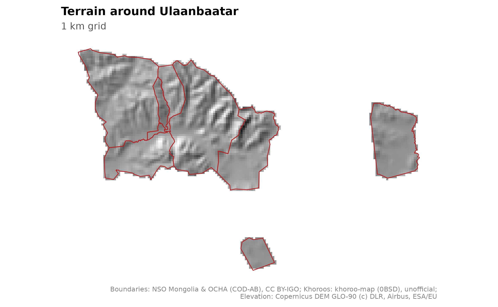
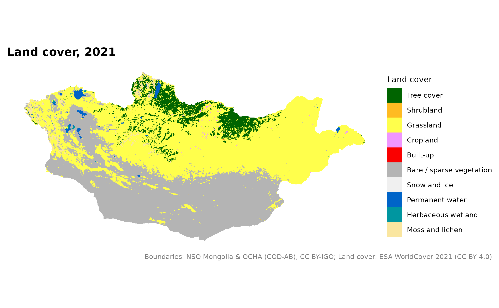
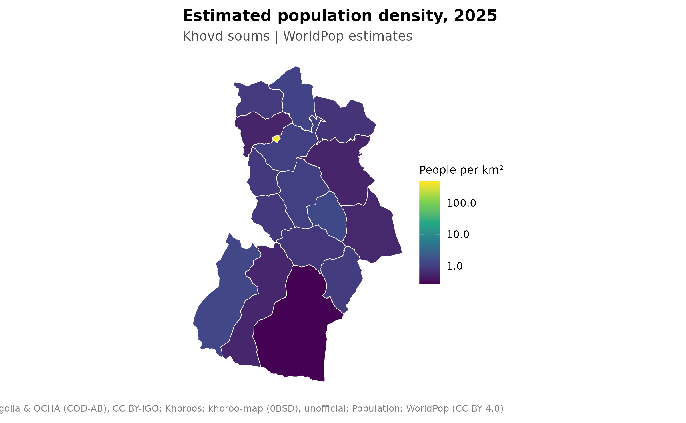
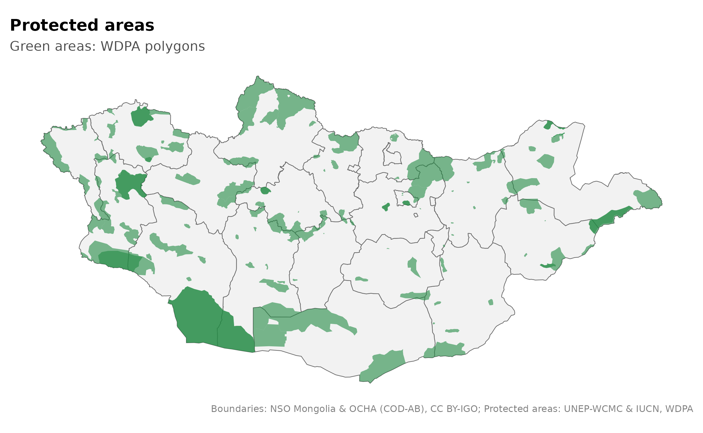

Map terrain, land cover and population
Source:vignettes/articles/terrain-population.Rmd
terrain-population.RmdThese layers are grids of cells, also called rasters. Each cell stores a value such as elevation or population. The examples download national 1 km grids once and save them for later use. Install terra and ggplot2 first:
install.packages(c("terra", "ggplot2"))| Function | Value | Source |
|---|---|---|
mn_elevation() |
Height in metres | Copernicus DEM GLO-90 |
mn_hillshade() |
Shaded relief calculated from elevation | Copernicus DEM GLO-90 |
mn_landcover() |
Land cover category | ESA WorldCover 2021 |
mn_population(2025) |
Estimated people per cell | WorldPop R2025A |
Elevation
elevation <- mn_elevation()
mn_map(elevation, title = "Elevation") +
geom_sf(data = mn_aimags(), fill = NA, colour = "white", linewidth = 0.2) +
labs(fill = "Metres")
Shaded relief
Hillshade makes terrain easier to see. It represents simulated lighting, not a measurement of elevation or vegetation.
mn_map(mn_hillshade()) +
geom_sf(data = mn_aimags(), fill = NA, colour = "white", linewidth = 0.3) +
geom_sf(data = mn_settlements(type = c("capital", "aimag_centre")),
colour = "firebrick", size = 1) +
labs(title = "Terrain and aimag centres",
caption = paste(strwrap(mn_citation(c("admin", "elevation_1km", "settlements")), width = 95), collapse = "\n"))
Select within to show one area. This example uses the
same cached 1 km grid, so it does not need a separate high-resolution
download.
mn_map(mn_hillshade(within = "Ulaanbaatar")) +
geom_sf(data = mn_ub_districts(), fill = NA, colour = "firebrick", linewidth = 0.4) +
labs(title = "Terrain around Ulaanbaatar", subtitle = "1 km grid",
caption = paste(strwrap(mn_citation(c("admin", "khoroos", "elevation_1km")), width = 95), collapse = "\n"))
Land cover
mn_map(mn_landcover(), title = "Land cover, 2021") +
labs(fill = "Land cover") +
theme(legend.text = element_text(size = 8))
The 1 km layer is a generalized view of the 10 m source. It is useful for a national overview, but does not describe every small patch of land.
Population
WorldPop values are people per cell. They are modelled estimates, and can differ from official NSO population totals. Values after the last census are projections.
mn_zonal() sums the grid within each polygon. Use the
original population grid for this calculation, then divide by polygon
area to calculate density. Start with one aimag to keep the example
quick. For a national summary, omit both within = "Khovd"
and aimag = "Khovd"; summing all soums will take
longer.
pop <- mn_population(2025, within = "Khovd")
soums <- mn_zonal(pop, mn_soums(aimag = "Khovd"), fun = "sum", name = "population")
soums$density <- soums$population / soums$area_km2
soums$density[soums$density == 0] <- NA_real_
mn_map(soums, fill = density, trans = "log10",
title = "Estimated population density, 2025",
na_label = "Zero estimate or no grid coverage") +
labs(fill = "People per km²", subtitle = "Khovd soums | WorldPop estimates")
A logarithmic scale cannot show zero. In this display, zero estimates
are grey alongside missing grid coverage; the original
population column is kept unchanged. For official
population maps, use the NSO workflow in Putting your data on a map.
At polygon edges, the sum uses the fraction of each cell covered by
the polygon. This assumes an even distribution within each cell. A 1 km
grid cannot locate people at individual buildings. Means use cell
coverage fractions, which are not physical area weights on a
longitude/latitude grid. For medians use exact = FALSE.
Protected areas
This layer downloads from UNEP-WCMC and refreshes after 90 days. Check the provider’s terms before using it; the raw dataset is not included or redistributed with the package.
pa <- mn_protected_areas()
mn_map(mn_aimags()) +
geom_sf(data = pa, fill = "#238b45", alpha = 0.6, colour = NA) +
labs(title = "Protected areas", subtitle = "Green areas: WDPA polygons",
caption = paste(strwrap(mn_citation(c("admin", "wdpa")), width = 95), collapse = "\n"))
When you need finer detail
The commands below are optional recipes, not the sources of the 1 km maps above. They stream data from the provider, need internet access each time, and are not run for this guide.
# Limit fine grids to a small area.
elevation_90m <- mn_elevation("90m", within = "Nalaikh")
cover_10m <- mn_landcover("10m", within = "Nalaikh")
mn_map(elevation_90m)
mn_map(cover_10m)mn_population(2025, resolution = "100m") downloads a
finer national population grid. More detail does not remove the model’s
uncertainty. Keep population data in their original grid for analysis;
changing grids preserves the retained total but changes how people are
allocated locally.